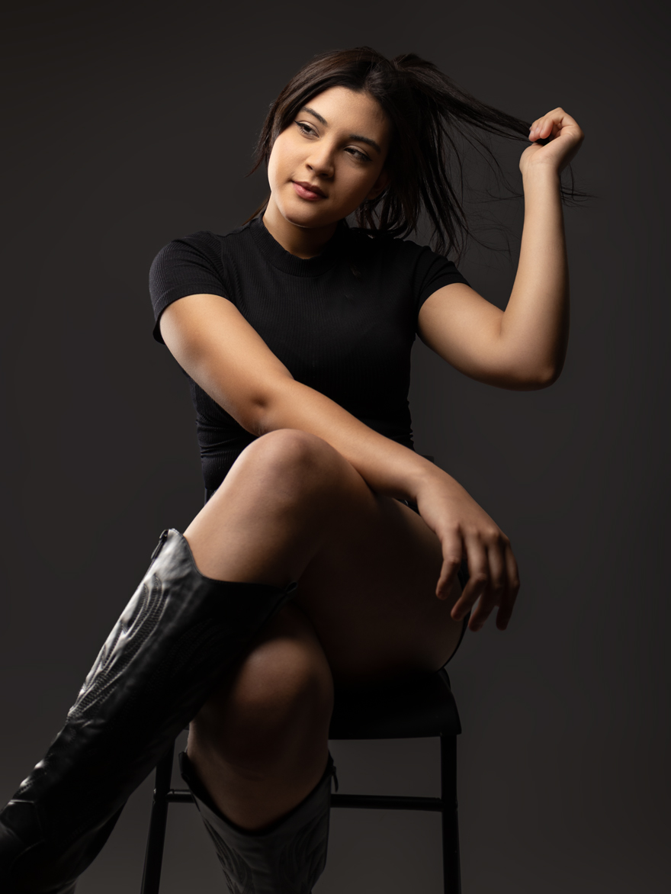
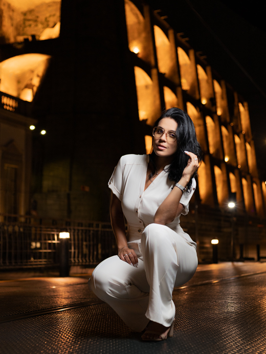
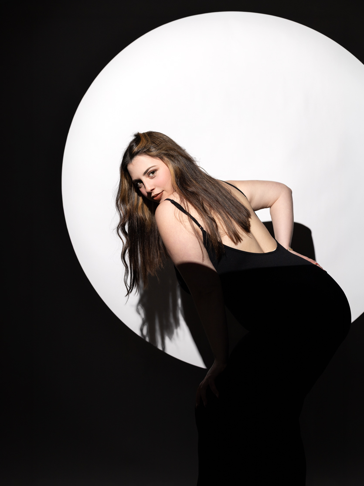
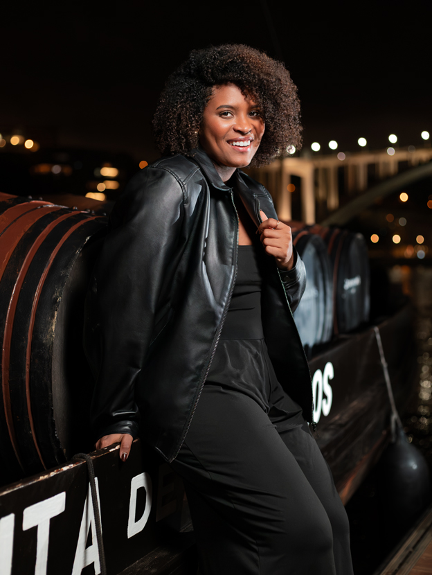
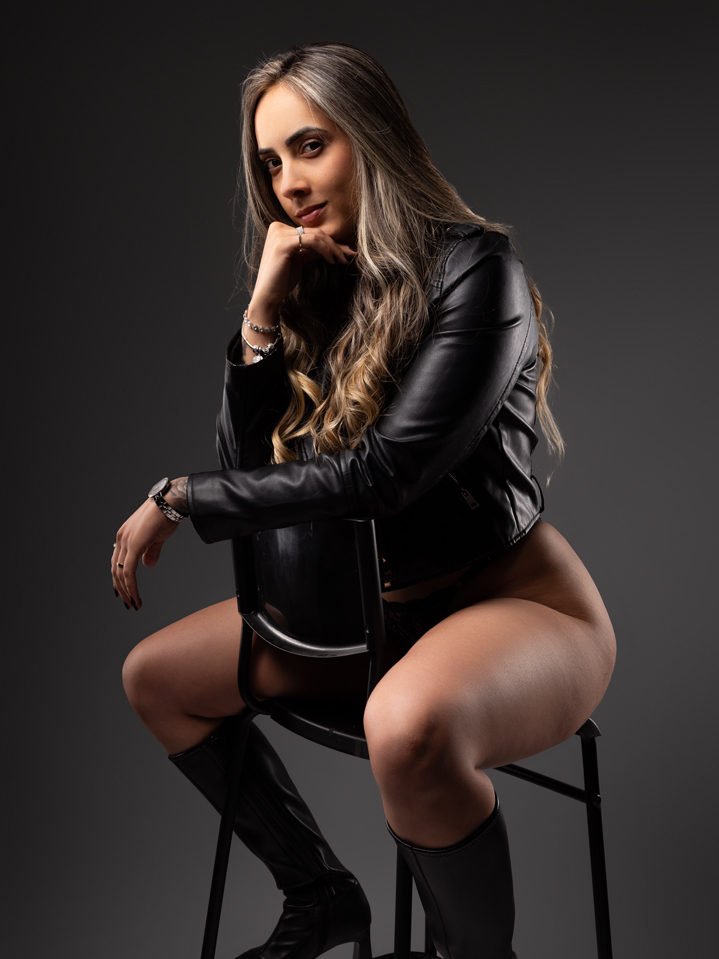
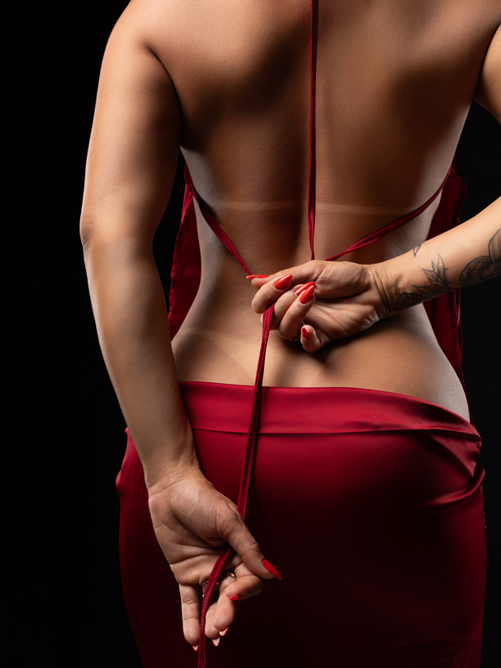

Fotógrafo de Retratos Femininos
Você, como
sempre foi.
Fotografo mulheres em sessões pensadas para devolver confiança, não só registrar um retrato. Cada sessão é um espaço para você se ver como realmente é.
Fotógrafo de Retratos Femininos
Fotografo mulheres em sessões pensadas para devolver confiança, não só registrar um retrato. Cada sessão é um espaço para você se ver como realmente é.
Alguns dos

01
02
03
04
05
06